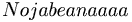

De: La Frikipedia, la enciclopedia extremadamente seria.
De: La Frikipedia, la enciclopedia extremadamente seria. De: La Frikipedia, la enciclopedia extremadamente seria.
| |
| Diario independiente e indepenmuela. |
|---|
| Las noticias más estúpidas que jamás se hayan inventado. Increíble pero mentira. |
| Sábado 10 de septiembre de 2016, Año 8 • Precio: Mil duro. |
| Portada • Deportes • Celebridades • Ciencia • Ocio y aficiones • Política • Horroróscopo • Internacional • Latinoamérica • Sucesos • Nacional • Predicción meterrelojeroica • Cultura • Anuncios por palabra |
| <<< volver a portada |
El descubrimiento ha sido casi casual, ya que normalmente los científicos no se preocupan de estas chorradas, pero como se aburrían le dieron a beber a un redactor de Piriódico
Para ello se escondieron y a un redactor aleatorio le pusieron una sonda mientras dormía para ir añadiéndole alcohol y ver su capacidad de escribir borracho una noticia, no se sabe a quien, pues es un secreto para no alterar el experimento.
Puuues esspero no serrr yoo porrrrque yo el alcoooohol no lo aguanto muuuuucho y enseguíaaa men borracho... ¿ eins?
A medidda que falla esccccribiendo le pondrrrrán un pocccccko más dalcoooohol para fer su capaaacidad parrrra escriiiiibir tando gorracho...¡¡¡ chsst !!!, nnoahaagammm rrrrruido questoi escribiendddo.
Y quando vean queeeee aúnnnnnn pueeeeede escribir emmmm condisssiones pueeeeeees le pondrrrran má y má y mmmmmmááááá asssin ssssta que feammm que no pueeeede scrivir yyyyyy pooooos le añadiriaaamm......pfffff...gjioor , nojughf, mamá onde tsar la cupluchefas y : Eres mi aaaamiiiiigggo del aaaalma kgg 
Todo el muuuundo me ooodia...tu eres mi amiiiigo...pfffff jAjAjAJa!!!
njijg sssturriaaaaaaaa patria queriiiiiiaaaaaaaa asturiaaaaaspotriae ..numka essssabido como segu べぺほぼぽ まみ むめもゃ やゅゆょよ らりるれ ろゎわゐゑをんゔ ゙゚゛゜ゝゞ〱〲 〳〴〵ーヽヾΑΒΓΔΕΖΗΘ ΙΚΛΜ ΝΞΟ ΠΡΣΤΥΦ dddd ΧΨΩ αβγδε d d ζηθικ λμνξοπρ ςστυφχψω
cammmmarrreroooo trarooondaaaaaa !!! JAJAJAJAJAJAJJA... JILIPOOOOOLLLASS SOOOI TTTE LO DIIIIGO EN MORFFSE ??????
COOOÑOOOO, HASSSIN NO HAY QUIEMMMM SSSSCRIBAA??????
QUIERO IR CON MI MAMAAAAAA !!!...COMO COÑOOOO SEQUITAAAABAN LASSS MIYUSKULAS?????...QUE HOYGAN DE MIEEEEERDA ESTOYYY HECH
Un redactor de Piriódico ha sido ingresado de grave coma etílico en la clínica Mayo. No me refiero a que sea una clínica cualquiera en el mes de mayo, me refiero a la clínica Mayo de Estados unid...¿ qué coño es este cable que me llega al cuello ?...¡ hic !
Autor(es):